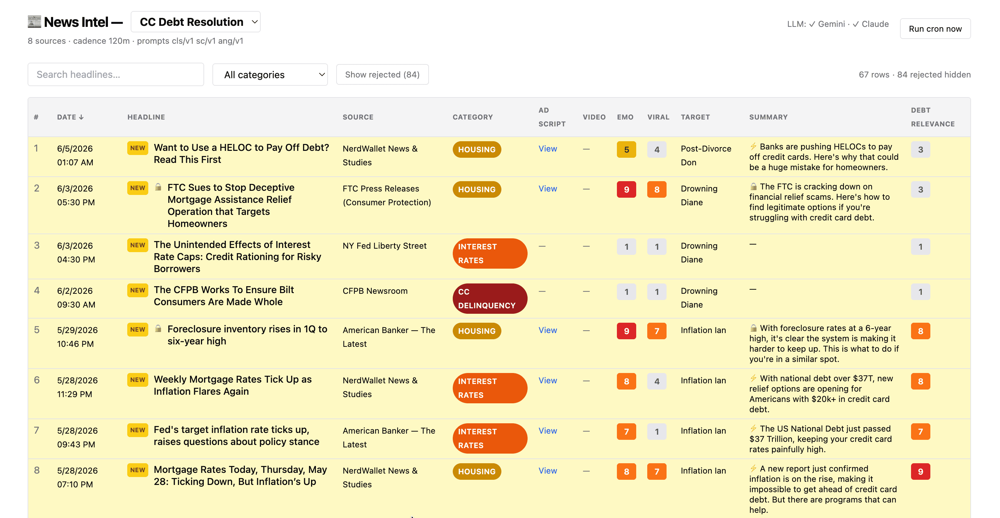
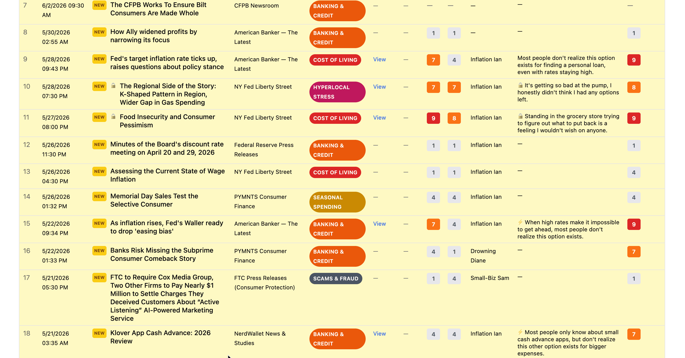
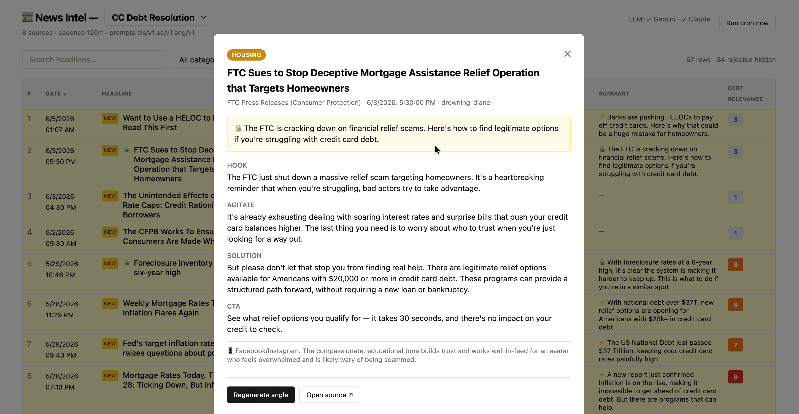
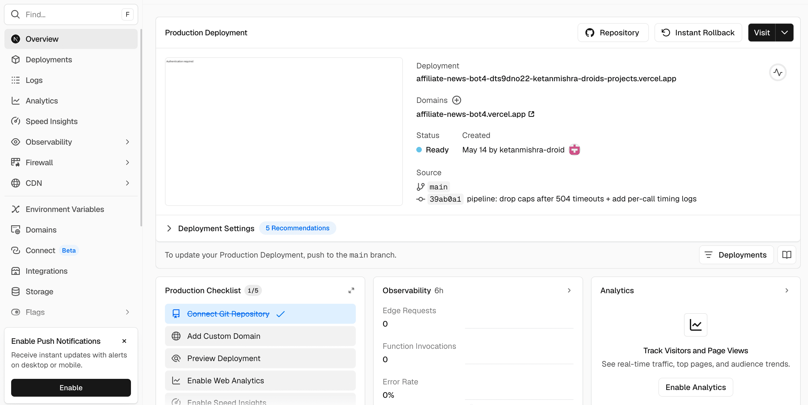

News Intel Board.
Self-hosted news intel for Debt and Personal Loans. Scrapes US news sites and scores each story for virality and emotional impact. Posts clearing the vertical-relevance threshold get an angle and a script auto-drafted. Hosted on Vercel at zero cost.
// Context
Research and ideation is where every creative cycle starts. For the Debt and Personal Loans verticals, that meant scanning US news sites every morning, picking stories with emotional pull, then translating each one into angle options for the day's creatives.
It was a daily manual task that consumed hours. Done by hand, by senior people, every day, before the actual creative work could begin.
// Approach
Built the intel board on Vercel for zero cost. Backend code written manually with Claude assistance. Python scrapers crawl a curated list of US news sites on a daily cron, plus extraction logic pulls each story's content.
Each scraped story gets scored on three axes:
Stories that clear the combined-score threshold get processed further. The board generates an angle that frames the news for the vertical, plus a script draft for the creative strategist to start from.
Hosted on Vercel from a Git repo. Always-on. Deployed with one push. Zero ongoing cost.
// Inside the board




// Outcome
The daily news-scanning ritual ended. The board pulls stories overnight and delivers ranked ideas with script drafts by morning. Senior time stopped being spent on the upstream research task.
The board ran in production for both Debt and Personal Loans. Generated daily ideas and scripts across both verticals without anyone touching the code after deploy.
Research as a daily ritual ended. The board does it overnight, every day, for free.